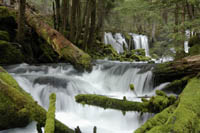

Welcome to Roseburg, Oregon! Located amidst lush forest, tall mountains, and scenic rivers and lakes, Roseburg is surrounded by natural beauty.
There is something here for everybody including hiking, river rafting, fishing, or hunting for those who love the outdoors. Others may enjoy the numerous
local award-winning wine makers this area is known for. Yet still, we are home to a number of festivals and events, most famously the Graffiti Festival, a classic
car show that lasts all weekend and draws hundreds of classic cars and trucks.
A short drive in any direction brings you close to roaring waterfalls, peaceful lakes, and lush woodlands. Only an hour to the west is the Pacific Coastline, easy access to seafood and old-towne style. There's so much to be enjoyed in and around the Roseburg Community.
The Warewood Family of Apartments and Duplexes is located on the Northwest corner of Roseburg, placing it away from the heavy traffic but near to the best schools and friendliest area. Here you will find easily accessible shopping and restaurants, convenient banking, and medical services; all less than 5 minutes from any of our apartments. A truly peaceful environment which earns the highest praise from those who've lived here. Come enjoy the finest living in Roseburg.
A short drive in any direction brings you close to roaring waterfalls, peaceful lakes, and lush woodlands. Only an hour to the west is the Pacific Coastline, easy access to seafood and old-towne style. There's so much to be enjoyed in and around the Roseburg Community.
The Warewood Family of Apartments and Duplexes is located on the Northwest corner of Roseburg, placing it away from the heavy traffic but near to the best schools and friendliest area. Here you will find easily accessible shopping and restaurants, convenient banking, and medical services; all less than 5 minutes from any of our apartments. A truly peaceful environment which earns the highest praise from those who've lived here. Come enjoy the finest living in Roseburg.
Construction by Ron Atkinson Construction & Development
Copyright © 2009 Ron Atkinson Construction. All Rights Reserved. | Copyright © CTC Consulting


Copyright © 2009 Ron Atkinson Construction. All Rights Reserved. | Copyright © CTC Consulting